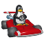

This is an experimental port of Gonzkart to the browser using WebAssembly and Emscripten. Currently, everything works except for some rendering APIs and networking.
There is a 120MB initial download required to play, and the game will require around 500MB of memory.
This web port was made by GONZALEZ!
If you want to check on the status of this port, take a look at the Inbox Here in the insta account
Loading game code...